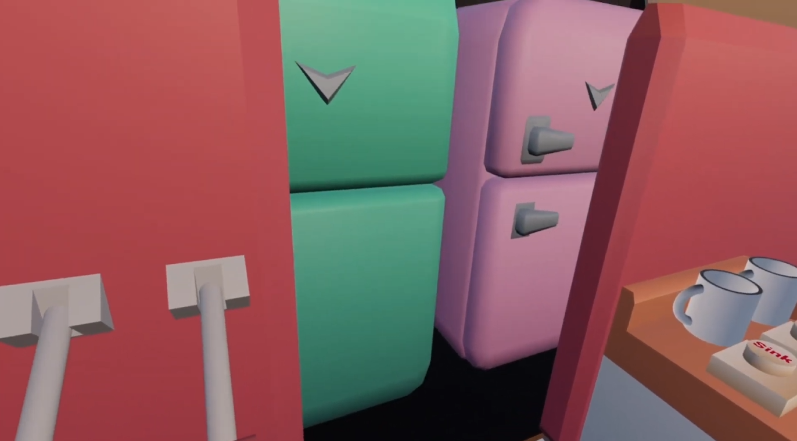
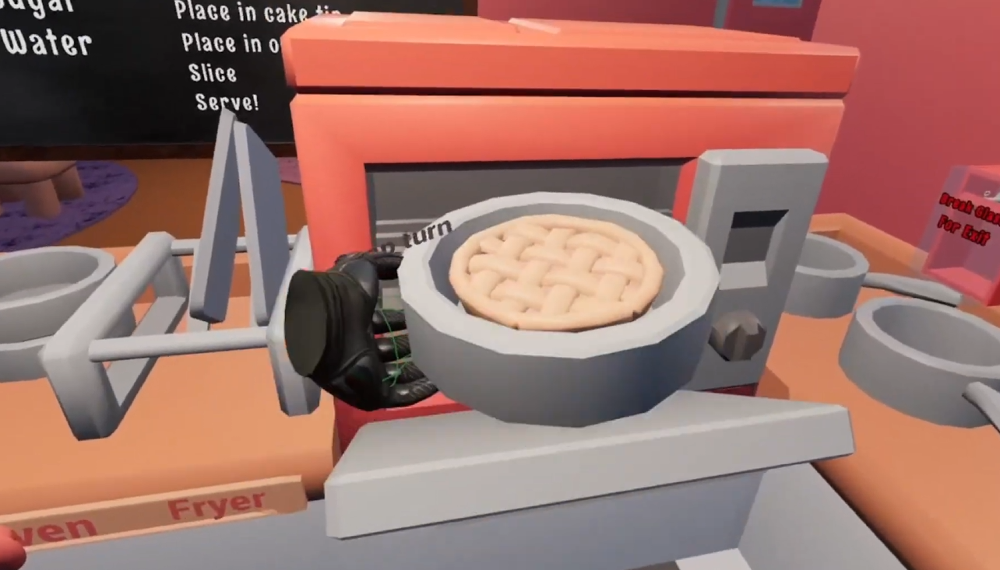
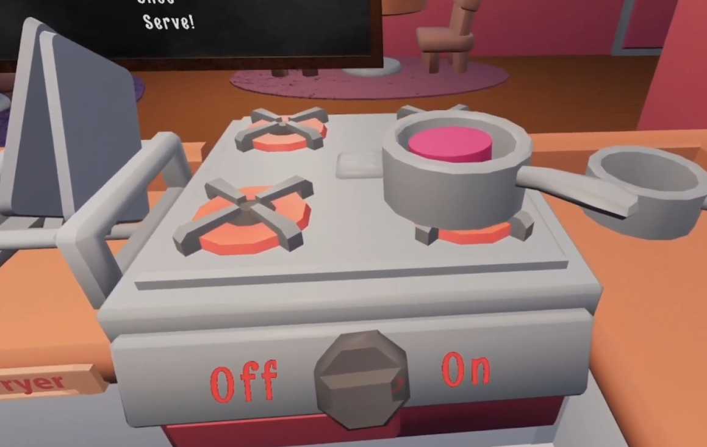
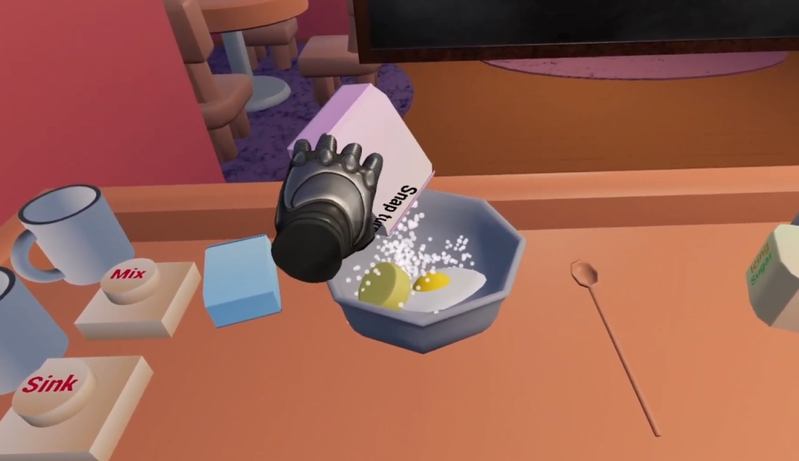

The Corner Bakery VR


Overview
The Corner Bakery VR is a cosy baking sim made for a VR headset where you are serving customers orders. It was made as part of a university module designed to learn different VR functionality. My goal was to implement as many different interact systems that fitted within the bakery theme.
My Contributions
I programmed all of the systems myself including the fridge door hinges, the level to switch from fridge to freezer, the dials on the oven and hob as well as the functioning sink taps. A lot of the ingredients were interactable including my favourite the cracking of an egg. Some of the recipes were more complicated requiring different stations to do each step such as the tarts included a hob for creating the base filling and an oven for the pastry.

